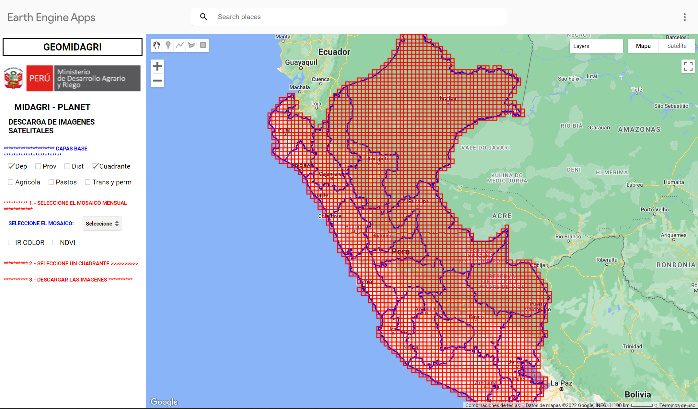
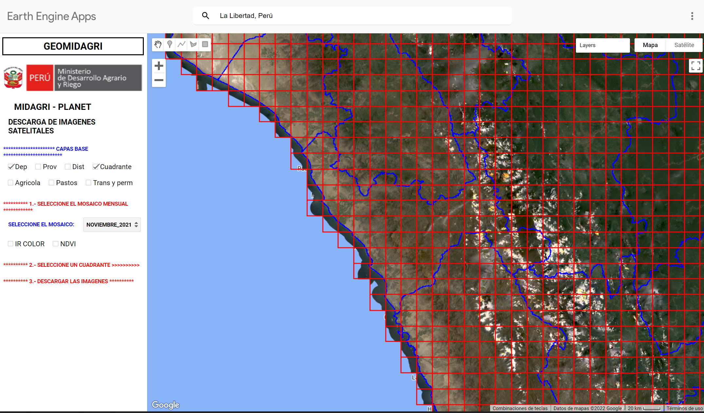
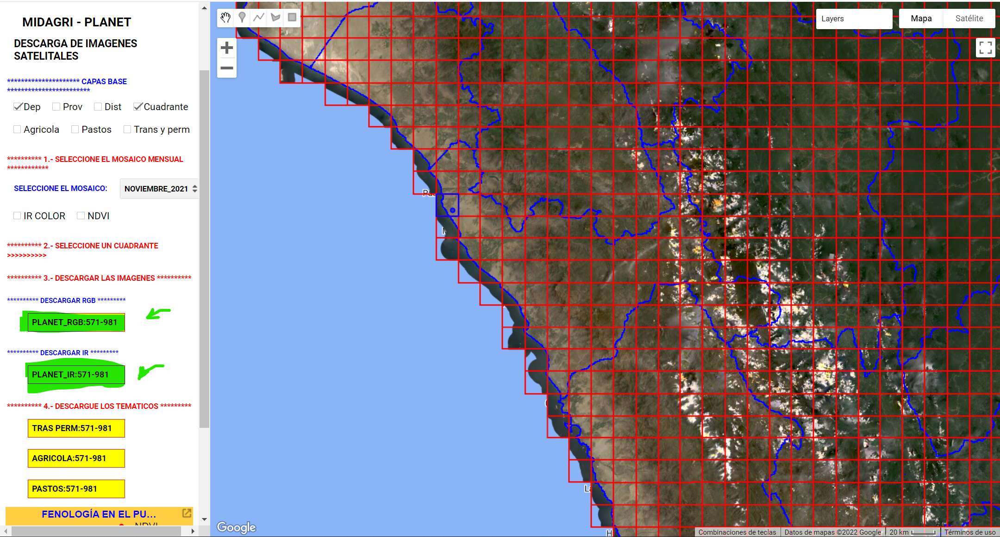
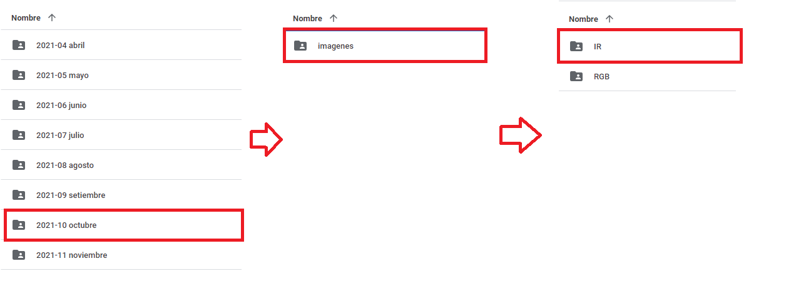

Exportación de los polígonos
Exportación
En la última reunión se acordó con el prof. Pedro Achancaray que las observaciones se exportarían en 11 bases de datos correspondientes a cada mes en cuestión (desde enero hasta noviembre) de manera que cada base acumulará los meses precedentes.
Si visualizáramos los lotes de cultivo (en color magenta) en comparación con los cuadrantes rásters podríamos ver en qué cuadrantes específicamente se encuentra cada lote de cultivo y descargar únicamente ese cuadrante (en verde). Es así como tenemos los siguientes resultados:


Indicaciones para descargar cuadrantes
Ahora que hemos identificado los cuadrantes a descargar (resaltados en verde), se dividirá entre los practicantes disponibles la tarea de descargar estos cuadrantes por mes desde la página del MIDAGRI. Para ingresar al enlace haga click aquí.
Esta página veremos lo siguiente:

En la interfaz del GEOMIDAGRI debemos concentrarnos en dos aspectos:
Primero, en el panel de la izquierda deben encontrarse seleccionadas las siguientes casillas:
Capas Base: Dep, Cuadrante
En la parte de “seleccione el mosaico elegir el mes/año en cuestión.
Segundo, en la parte superior se encuentra una barra de búsqueda en la que ingresaremos La Libertad, Perú
A continuación, un ejemplo de los pasos mencionados para el mes de noviembre 2021:

Ahora bien, debemos hacer click al cuadrado dentro de la Libertad que corresponde según el mes asignado, es decir, los cuadrados que se encuentran resaltados en verde. Cuando seleccionemos uno de los cuadrantes nos aparecerán los siguientes botones a los cuales debemos hacer click:

Una vez realizado click a los dos botones que se han resaltado en verde, se descargarán dos archivos zipeados con una imagen en formato .tif, una imagen tendrá la nomenclatura IR en su nombre y la otra tendrá RGB. Por ejemplo, en el caso anterior, tendríamos dos archivos denominados
PLANET_IR571-981.tifPLANET_RGB571-981.tif
Es necesario que haga unzip a los archivos descargados de modo que se extraiga la imagen que se encuentra dentro de la carpeta zipeada descargada.
Luego de ello, subir las imágenes a la carpeta destino en el drive Qlab en el siguiente link
Para subir los archivos a la carpeta en el drive Qlab ubicar el mes asignado y dentro de la carpeta imagenes subir a la carpeta IR los archivos con esa nomenclatura y de la misma manera a la carpeta RGB. Por ejemplo, si tuviera una imagen IR (e.g PLANET_IR571-981.tif) para el mes octubre seguiría la siguiente ruta:

Asignación de meses
| Mes | Encargados | Estatus |
|---|---|---|
| Abril | María Pía | Completado |
| Mayo | Santiago | Completado |
| Junio | Jimena | Completado |
| Julio | Josué | Completado |
| Agosto | Antony | Completado |
| Setiembre | Roberto / Christian | Completado |
| Octubre | Darla / Jazmín | Completado |
Deadline
Se espera que se puedan descargar y subir los archivos .tif a la carpeta correspondiente para el sábado 3 al mediodía.